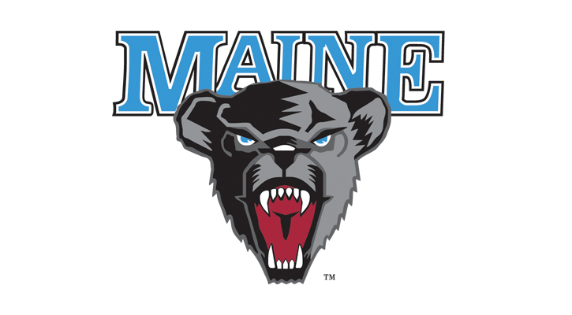
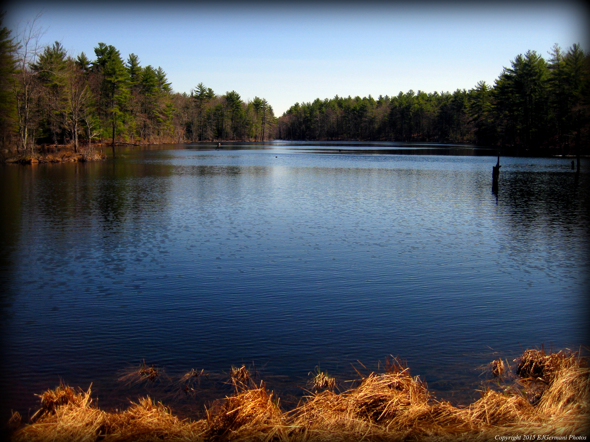

| Home | About Me | Favorite Activities | Favorite Things | Pictures |
|---|
Hi and welcome to Ariana's webpage! I am 20 years old and a business management student at the University of Maine. I am a third year transfer student from Rhode Island. I just moved to Maine a couple months ago to start my education here! I am finishing my college degree at the University of Maine. After I graduate, I plan to move back to Rhode Island and aquire a job as a business manager. It is a good thing that I love to work.

Back at home, I live in a small town called Glocester. I was raised on a farm with all different animals. We've had cows, pigs, goats, horses, ponies, chickens, dogs and the list goes on. I am one of three children. I have two older sisters, Crystal and Dominiuqe.
In Rhode Island I work at a family owned bakery called Pastryland. It is an Italian bakery that sells pizza, calzones, pastry, and cakes. I suggest trying the raspberry slices, it is one of my favorites!
